The Process menu closes the collections of a period. RCD Processing gathers the receipts of one collector into a Report of Collection and Deposits (RCD). RCLO Processing then gathers the RCDs of a fund into a Report of Collection by Liquidating Officer (RCLO). Each step gives the report a number.
Open the sidebar and click Process. It has two pages: Report of Collection and Deposits(RCD) Processing and Report of Collection by Liquidating Officer(RCLO) Processing.
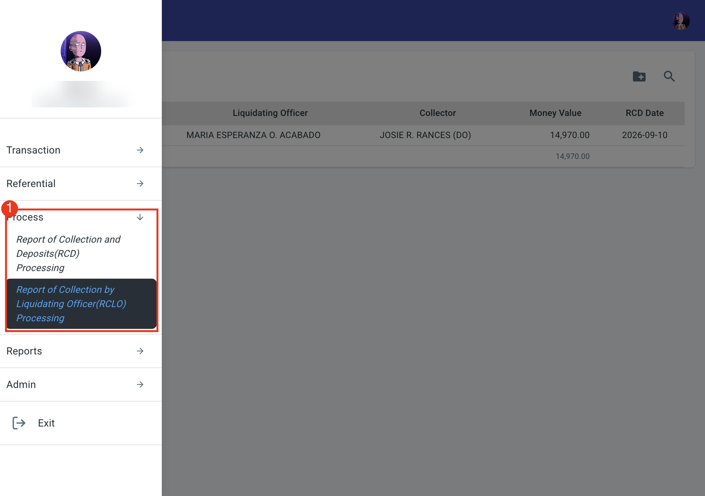
The two steps follow each other:
Both pages also feed the reports of the Reports menu.
This page processes the receipts of one collector into an RCD. When it opens, it shows a table and two icons at the top right: the folder icon with a plus sign opens the window PROCESS RCD DIALOG, and the magnifying glass opens the list of RCDs that were already made. The table has no row until you retrieve one, and says No record found.
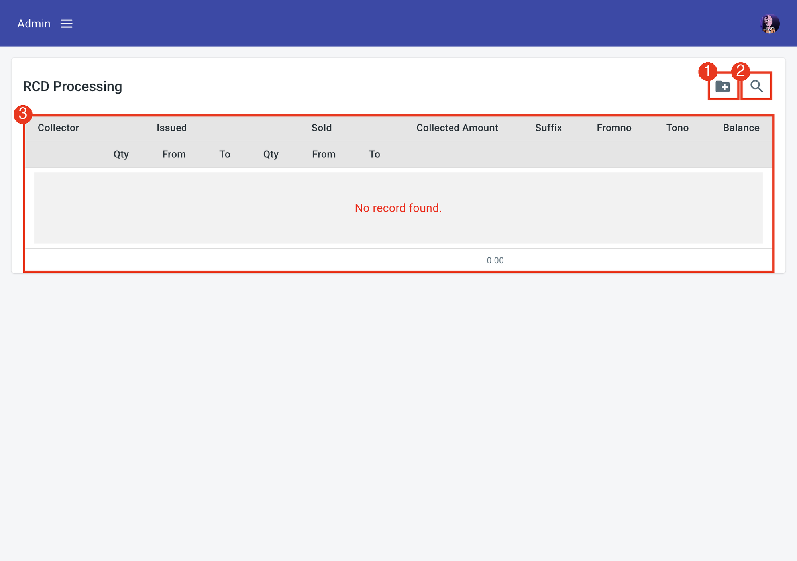
Click the folder icon. Fill in the boxes of PROCESS RCD DIALOG from top to bottom:
| Box | What to do |
|---|---|
| Liq Officer | Required. A list of the liquidating officers. |
| Collector | Required. A list of the collectors, each shown as the name and the code. The list follows your assigned personnel (Section 1.2.6): only the collectors of type Collector that are assigned to you appear. |
| Fund Code | Required. A list of the fund codes (100(01), 100(91), 100(92), 200, 200(01), 300, 300(13), 300(14), 300(15) and 400). |
| Form Code | Required. The kind of receipt, for example AF#51 - ACCOUNTABLE FORM # 51. |
| From OR Date and To OR Date | The first and the last date of the receipts. Both start as today. Change From OR Date to go back in time. |
| RCD Date | The date of the RCD. It starts as today. |
| RCD No. | Empty at first. TIS fills it in after you click Process. |
The two buttons at the bottom are gray until the required boxes are filled in. Retrieve shows the receipts. Process makes the RCD.
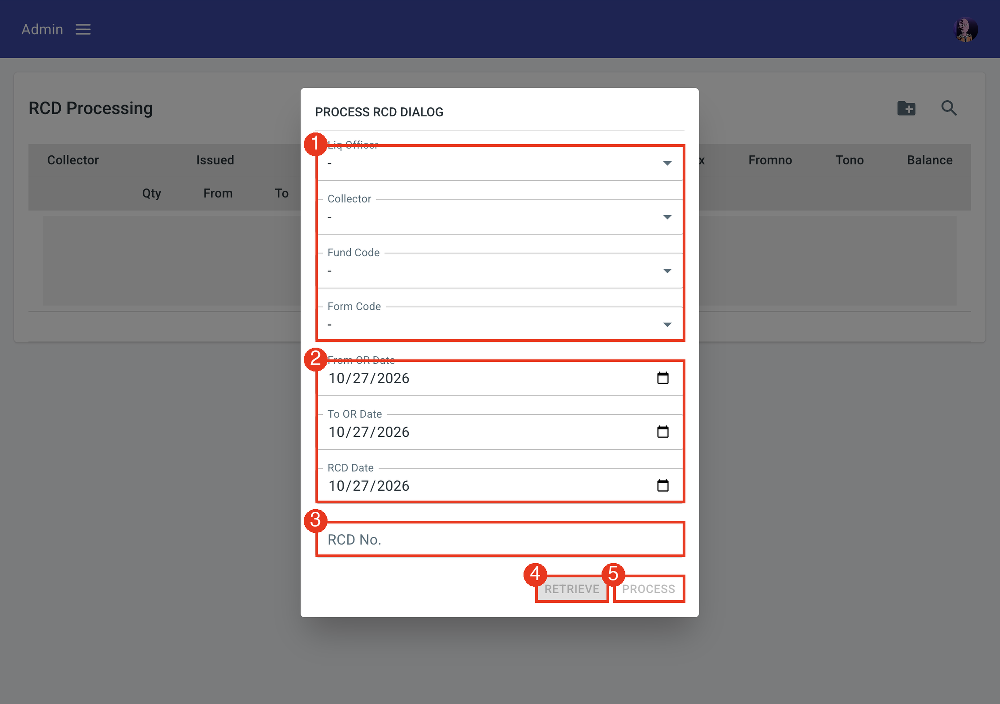
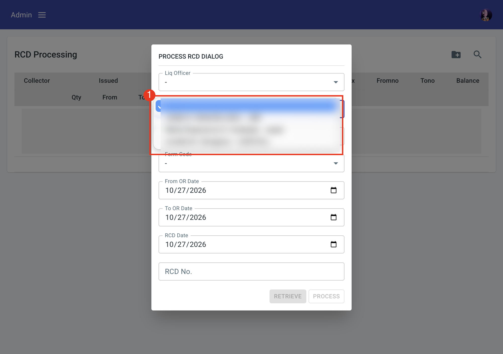
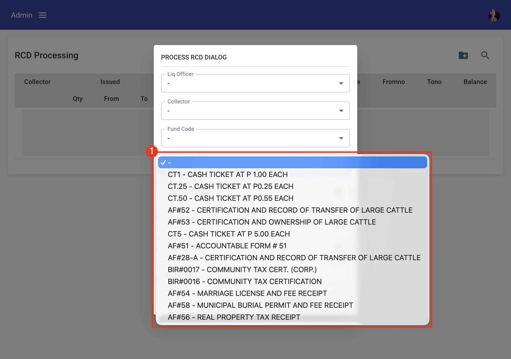
Click Retrieve. TIS fills the table of the page behind the window. It only reads, it does not make the RCD. Check the table first. The columns are:
The total of the Collected Amount is shown below the table. For example, one booklet of 50 receipts, number 4099451 to 4099500, shows 49 sold from 4099452 to 4099500, an amount of 5,310.00 and a balance of 1.
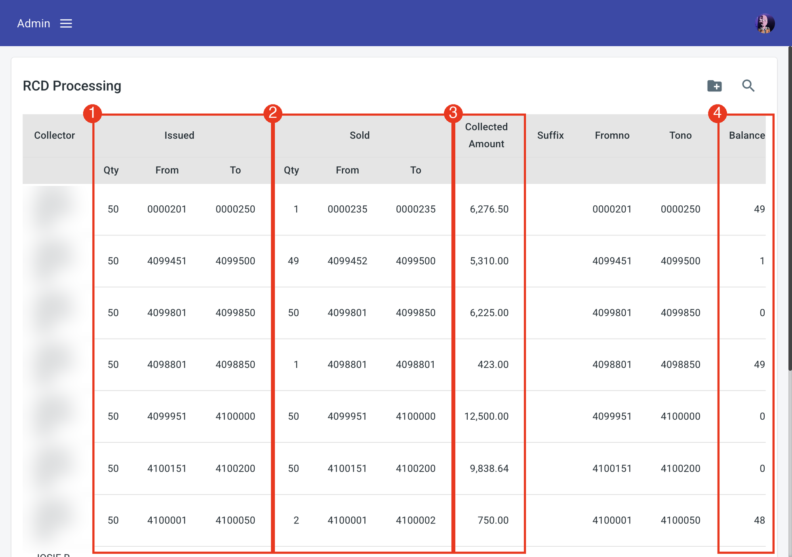
When the table is right, click Process in the window. TIS gives the RCD a number and fills the RCD No. box. The number is made of the fund code, the collector code, the RCD date and a running number, for example 100(01)JRR10212026029: fund 100(01), collector JRR, 10/21/2026, number 029. RCD No. updated successfully appears.
Process then marks every receipt of the range (and its checks) with the RCD No. and the RCD date, so that the same receipt cannot go into another RCD. Receipts of other collectors, other funds or other forms are not touched.
Click the magnifying glass to open the RCD List. It shows the RCD Date, the RCD No. and the RCLO No. of each RCD, with a Remove button. Type in Search RCD No. to find one. When there is none, No RCD record appears.
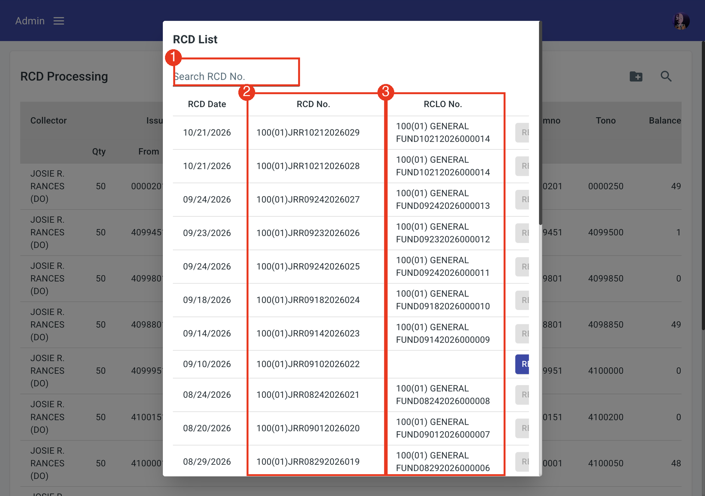
This page gathers RCDs into an RCLO. It looks like RCD Processing: a table, the folder icon (PROCESS RCLO DIALOG) and the magnifying glass (the list of RCLOs). Its columns are RCD No., Liquidating Officer, Collector, Money Value and RCD Date.
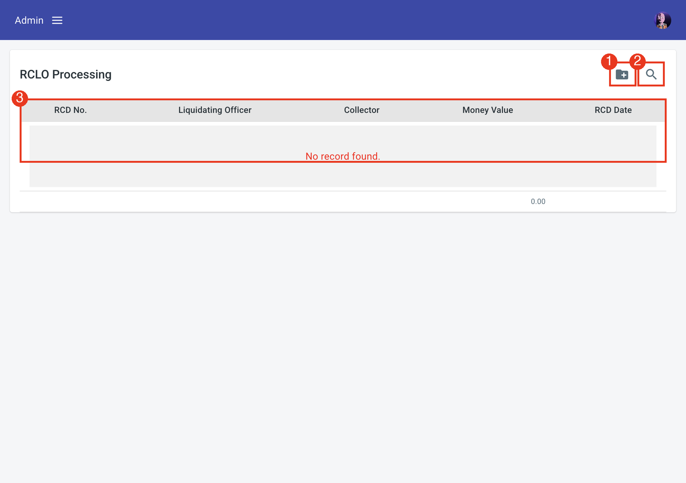
Click the folder icon. The window PROCESS RCLO DIALOG has fewer boxes than the RCD window:
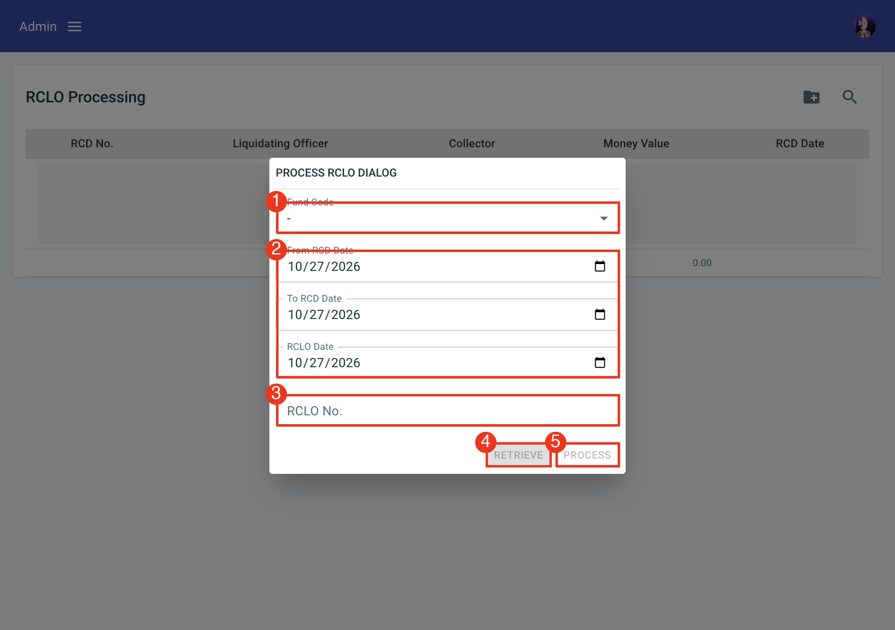
| RCD (Section 4.2) | RCLO (Section 4.3) | |
|---|---|---|
| Full name | Report of Collection and Deposit | Report of Collection by Liquidating Officer |
| What it processes | The official receipts of one collector, one fund and one kind of form, in a range of receipt dates (From OR Date and To OR Date). | The RCDs of one fund, in a range of RCD dates (From RCD Date and To RCD Date). It does not look at single receipts. |
| What you choose | Liq Officer, Collector, Fund Code and Form Code. | Fund Code only. |
| What it makes | An RCD No. (fund, collector code, date and a running number), for example 100(01)JRR09102026022. | An RCLO No. (fund name, date and a running number), for example 100(01) GENERAL FUND09102026000010. |
| What is marked | Every receipt (and check) of the range receives the RCD No. and the RCD date. | Every RCD of the range receives the RCLO No. and the RCLO date. |
| The result on the page | One row for each booklet of the collector: issued, sold, collected amount and balance. | One row for each RCD: its number, the officer, the collector, the money value and the date, with the total. |
| Who it covers | One collector. | All the collectors of the liquidating officer under the fund. |
| Printed report | Report of Collection and Deposit (Section 5.4). | Report of Collection by Liquidating Officer, with the deposits (Section 5.5). |
| Order | First. | Second, after the RCDs exist. An RCD in an RCLO can no longer be removed. |
Choose the fund and the first date, then click Retrieve. The page behind the window lists the RCDs that are not yet in an RCLO: the RCD No., the liquidating officer, the collector, the money value of each RCD and the RCD date, with the total below. In the example, one RCD, 100(01)JRR09102026022 of 09/10/2026, has a money value of 14,970.00.
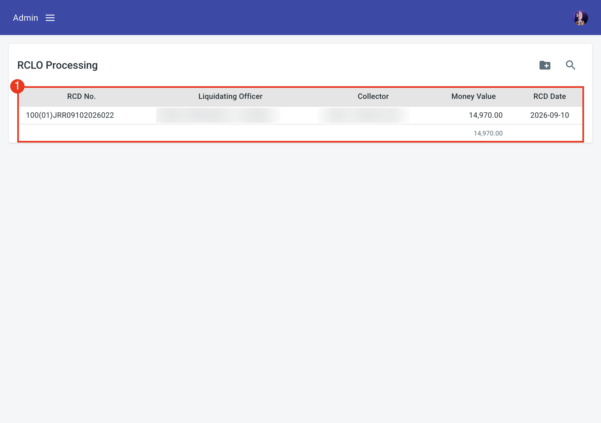
When the table is right, click Process. TIS gives the RCLO a number (the fund name, the RCLO date and a running number, for example 100(01) GENERAL FUND10212026000014) and fills the RCLO No. box. RCLO no. updated successfully appears. Every RCD of the table receives the RCLO No. and the RCLO date.
Click the magnifying glass to open the RCLO List. It shows the RCLO Date and the RCLO No. of each RCLO, with a Remove button. Type in Search RCLO No. to find one. When there is none, No RCLO record appears. Remove asks Are you sure to delete this RCLO? Yes removes the RCLO and frees its RCDs, which can then go into another RCLO. RCLO deleted successfully follows.
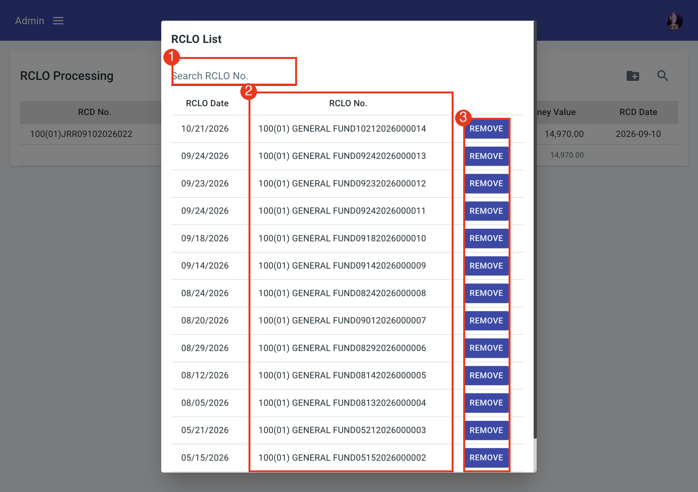